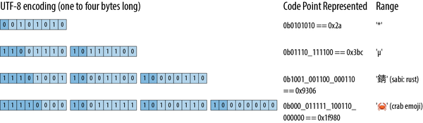

Chapter 17. Strings and Text
The string is a stark data structure and everywhere it is passed there is much duplication of process. It is a perfect vehicle for hiding information.
Alan Perlis, epigram #34
We’ve been using Rust’s main textual types, String, str, and char, throughout the book. In “String and Character Types”, we described the syntax for character and string literals and showed how strings are represented in memory. In this chapter, we cover text handling in more detail.
In this chapter:
-
We give you some background on Unicode that should help you make sense of the standard library’s design.
-
We describe the
chartype, representing a single Unicode code point. -
We describe the
Stringandstrtypes, representing owned and borrowed sequences of Unicode characters. These have a broad variety of methods for building, searching, modifying, and iterating over their contents. -
We cover Rust’s string formatting facilities, like the
println!andformat!macros. You can write your own macros that work with formatting strings and extend them to support your own types. -
Finally, we give an overview of Rust’s regular expression support.
Some Unicode Background
This book is about Rust, not Unicode, which has entire books devoted to it already. But Rust’s character and string types are designed around Unicode. Here are a few bits of Unicode that help explain Rust.
ASCII, Latin-1, and Unicode
Unicode and ASCII match for all of ASCII’s code points, from 0 to 0x7f: for example, both assign the character * the code point 42. Similarly, Unicode assigns 0 through 0xff to the same characters as the ISO/IEC 8859-1 character set, an eight-bit superset of ASCII for use with Western European languages. Unicode calls this range of code points the Latin-1 code block, so we’ll refer to ISO/IEC 8859-1 by the more evocative name Latin-1.
Since Unicode is a superset of Latin-1, converting Latin-1 to Unicode doesn’t even require a table:
fnlatin1_to_char(latin1:u8)->char{latin1aschar}
The reverse conversion is trivial as well, assuming the code points fall in the Latin-1 range:
fnchar_to_latin1(c:char)->Option<u8>{ifcasu32<=0xff{Some(casu8)}else{None}}
UTF-8
The Rust String and str types represent text using the UTF-8 encoding form. UTF-8 encodes a character as a sequence of one to four bytes (Figure 17-1).

Figure 17-1. The UTF-8 encoding
There are two restrictions on well-formed UTF-8 sequences. First, only the shortest encoding for any given code point is considered well-formed; you can’t spend four bytes encoding a code point that would fit in three. This rule ensures that there is exactly one UTF-8 encoding for a given code point. Second, well-formed UTF-8 must not encode numbers from 0xd800 through 0xdfff or beyond 0x10ffff: those are either reserved for noncharacter purposes or outside Unicode’s range entirely.
Figure 17-2 shows some examples.

Figure 17-2. UTF-8 examples
Note that, even though the crab emoji has an encoding whose leading byte contributes only zeros to the code point, it still needs a four-byte encoding: three-byte UTF-8 encodings can only convey 16-bit code points, and 0x1f980 is 17 bits long.
Here’s a quick example of a string containing characters with encodings of varying lengths:
assert_eq!("うどん: udon".as_bytes(),&[0xe3,0x81,0x86,// う0xe3,0x81,0xa9,// ど0xe3,0x82,0x93,// ん0x3a,0x20,0x75,0x64,0x6f,0x6e,// : udon],);
Figure 17-2 also shows some very helpful properties of UTF-8:
-
Since UTF-8 encodes code points
0through0x7fas nothing more than the bytes0through0x7f, a range of bytes holding ASCII text is valid UTF-8. And if a string of UTF-8 includes only characters from ASCII, the reverse is also true: the UTF-8 encoding is valid ASCII.The same is not true for Latin-1: for example, Latin-1 encodes
éas the byte0xe9, which UTF-8 would interpret as the first byte of a three-byte encoding. -
From looking at any byte’s upper bits, you can immediately tell whether it is the start of some character’s UTF-8 encoding or a byte from the midst of one.
-
An encoding’s first byte alone tells you the encoding’s full length, via its leading bits.
-
Since no encoding is longer than four bytes, UTF-8 processing never requires unbounded loops, which is nice when working with untrusted data.
-
In well-formed UTF-8, you can always tell unambiguously where characters’ encodings begin and end, even if you start from an arbitrary point in the midst of the bytes. UTF-8 first bytes and following bytes are always distinct, so one encoding cannot start in the midst of another. The first byte determines the encoding’s total length, so no encoding can be a prefix of another. This has a lot of nice consequences. For example, searching a UTF-8 string for an ASCII delimiter character requires only a simple scan for the delimiter’s byte. It can never appear as any part of a multibyte encoding, so there’s no need to keep track of the UTF-8 structure at all. Similarly, algorithms that search for one byte string in another will work without modification on UTF-8 strings, even though some don’t even examine every byte of the text being searched.
Although variable-width encodings are more complicated than fixed-width encodings, these characteristics make UTF-8 more comfortable to work with than you might expect. The standard library handles most aspects for you.
Text Directionality
Whereas scripts like Latin, Cyrillic, and Thai are written from left to right, other scripts like Hebrew and Arabic are written from right to left. Unicode stores characters in the order in which they would normally be written or read, so the initial bytes of a string holding, say, Hebrew text encode the character that would be written at the right:
assert_eq!("ערב טוב".chars().next(),Some('ע'));
Characters (char)
A Rust char is a 32-bit value holding a Unicode code point. A char is guaranteed to fall in the range from 0 to 0xd7ff or in the range 0xe000 to 0x10ffff; all the methods for creating and manipulating char values ensure that this is true. The char type implements Copy and Clone, along with all the usual traits for comparison, hashing, and formatting.
A string slice can produce an iterator over its characters with slice.chars():
assert_eq!("カニ".chars().next(),Some('カ'));
In the descriptions that follow, the variable ch is always of type char.
Classifying Characters
The char type has methods for classifying characters into a few common categories, as listed in Table 17-1. These all draw their definitions from Unicode.
| Method | Description | Examples |
|---|---|---|
ch.is_numeric() |
A numeric character. This includes the Unicode general categories “Number; digit” and “Number; letter” but not “Number; other”. | '4'.is_numeric()'ᛮ'.is_numeric()'⑧'.is_numeric() |
ch.is_alphabetic() |
An alphabetic character: Unicode’s “Alphabetic” derived property. | 'q'.is_alphabetic()'七'.is_alphabetic() |
ch.is_alphanumeric() |
Either numeric or alphabetic, as defined earlier. | '9'.is_alphanumeric()'饂'.is_alphanumeric()!'*'.is_alphanumeric() |
ch.is_whitespace() |
A whitespace character: Unicode character property “WSpace=Y”. | ' '.is_whitespace()'\n'.is_whitespace()'\u{A0}'.is_whitespace() |
ch.is_control() |
A control character: Unicode’s “Other, control” general category. | '\n'.is_control()'\u{85}'.is_control() |
A parallel set of methods restricts itself to ASCII only, returning false for any non-ASCII char (Table 17-2).
| Method | Description | Examples |
|---|---|---|
ch.is_ascii() |
An ASCII character: one whose code point falls between 0 and 127 inclusive. |
'n'.is_ascii()!'ñ'.is_ascii() |
ch.is_ascii_alphabetic() |
An upper- or lowercase ASCII letter, in the range 'A'..='Z' or 'a'..='z'. |
'n'.is_ascii_alphabetic()!'1'.is_ascii_alphabetic()!'ñ'.is_ascii_alphabetic() |
ch.is_ascii_digit() |
An ASCII digit, in the range '0'..='9'. |
'8'.is_ascii_digit()!'-'.is_ascii_digit()!'⑧'.is_ascii_digit() |
ch.is_ascii_hexdigit() |
Any character in the ranges '0'..='9', 'A'..='F', or 'a'..='f'. |
|
ch.is_ascii_alphanumeric() |
An ASCII digit or upper- or lowercase letter. | 'q'.is_ascii_alphanumeric()'0'.is_ascii_alphanumeric() |
ch.is_ascii_control() |
An ASCII control character, including ‘DEL’. | '\n'.is_ascii_control()'\x7f'.is_ascii_control() |
ch.is_ascii_graphic() |
Any ASCII character that leaves ink on the page: neither a space nor a control character. | 'Q'.is_ascii_graphic()'~'.is_ascii_graphic()!' '.is_ascii_graphic() |
ch.is_ascii_uppercase(),ch.is_ascii_lowercase() |
ASCII uppercase and lowercase letters. | 'z'.is_ascii_lowercase()'Z'.is_ascii_uppercase() |
ch.is_ascii_punctuation() |
Any ASCII graphic character that is neither alphabetic nor a digit. | |
ch.is_ascii_whitespace() |
An ASCII whitespace character: a space, horizonal tab, line feed, form feed, or carriage return. | ' '.is_ascii_whitespace()'\n'.is_ascii_whitespace()!'\u{A0}'.is_ascii_whitespace() |
All the is_ascii_... methods are also available on the u8 byte type:
assert!(32u8.is_ascii_whitespace());assert!(b'9'.is_ascii_digit());
Take care when using these functions to implement an existing specification like a programming language standard or file format, since classifications can differ in surprising ways. For example, note that is_whitespace and is_ascii_whitespace differ in their treatment of certain characters:
letline_tab='\u{000b}';// 'line tab', AKA 'vertical tab'assert_eq!(line_tab.is_whitespace(),true);assert_eq!(line_tab.is_ascii_whitespace(),false);
The char::is_ascii_whitespace function implements a definition of whitespace common to many web standards, whereas char::is_whitespace follows the Unicode standard.
Handling Digits
For handling digits, you can use the following methods:
ch.to_digit(radix)-
Decides whether
chis a digit in baseradix. If it is, it returnsSome(num), wherenumis au32. Otherwise, it returnsNone. This recognizes only ASCII digits, not the broader class of characters covered bychar::is_numeric. Theradixparameter can range from 2 to 36. For radixes larger than 10, ASCII letters of either case are considered digits with values from 10 through 35. char::from_digit(num, radix)-
A free function that converts the
u32digit valuenumto acharif possible. Ifnumcan be represented as a single digit inradix,from_digitreturnsSome(ch), wherechis the digit. Whenradixis greater than 10,chmay be a lowercase letter. Otherwise, it returnsNone.This is the reverse of
to_digit. Ifchar::from_digit(num, radix)isSome(ch), thench.to_digit(radix)isSome(num). Ifchis an ASCII digit or lowercase letter, the converse holds as well. ch.is_digit(radix)-
Returns
trueifchis an ASCII digit in baseradix. This is equivalent toch.to_digit(radix) != None.
So, for example:
assert_eq!('F'.to_digit(16),Some(15));assert_eq!(char::from_digit(15,16),Some('f'));assert!(char::is_digit('f',16));
Case Conversion for Characters
ch.is_lowercase(),ch.is_uppercase()-
Indicate whether
chis a lower- or uppercase alphabetic character. These follow Unicode’s Lowercase and Uppercase derived properties, so they cover non-Latin alphabets like Greek and Cyrillic and give the expected results for ASCII as well. ch.to_lowercase(),ch.to_uppercase()-
Return iterators that produce the characters of the lower- and uppercase equivalents of
ch, according to the Unicode Default Case Conversion algorithms:letmutupper='s'.to_uppercase();assert_eq!(upper.next(),Some('S'));assert_eq!(upper.next(),None);These methods return an iterator instead of a single character because case conversion in Unicode isn’t always a one-to-one process:
// The uppercase form of the German letter "sharp S" is "SS":letmutupper='ß'.to_uppercase();assert_eq!(upper.next(),Some('S'));assert_eq!(upper.next(),Some('S'));assert_eq!(upper.next(),None);// Unicode says the lowercase of Turkish dotted capital 'İ' is// 'i' followed by `'\u{307}'`, COMBINING DOT ABOVE, so that a// subsequent conversion back to uppercase preserves the dot.letch='İ';// `'\u{130}'`letmutlower=ch.to_lowercase();assert_eq!(lower.next(),Some('i'));assert_eq!(lower.next(),Some('\u{307}'));assert_eq!(lower.next(),None);As a convenience, these iterators implement the
std::fmt::Displaytrait, so you can pass them directly to aprintln!orwrite!macro.
Conversions to and from Integers
Rust’s as operator will convert a char to any integer type, silently masking off any upper bits:
assert_eq!('B'asu32,66);assert_eq!('饂'asu8,66);// upper bits truncatedassert_eq!('二'asi8,-116);// same
The as operator will convert any u8 value to a char, and char implements From<u8> as well, but wider integer types can represent invalid code points, so for those you must use char::from_u32, which returns Option<char>:
assert_eq!(char::from(66),'B');assert_eq!(char::from_u32(0x9942),Some('饂'));assert_eq!(char::from_u32(0xd800),None);// reserved for UTF-16
String and str
Rust’s String and str types are guaranteed to hold only well-formed UTF-8. The library ensures this by restricting the ways you can create String and str values and the operations you can perform on them, such that the values are well-formed when introduced and remain so as you work with them. All their methods protect this guarantee: no safe operation on them can introduce ill-formed UTF-8. This simplifies code that works with the text.
Rust places text-handling methods on either str or String depending on whether the method needs a resizable buffer or is content just to use the text in place. Since String dereferences to &str, every method defined on str is directly available on String as well. This section presents methods from both types, grouped roughly by area of utility.
These methods index text by byte offsets and measure its length in bytes, rather than characters. In practice, given the nature of Unicode, indexing by character is not as useful as it may seem, and byte offsets are faster and simpler. If you try to use a byte offset that lands in the midst of some character’s UTF-8 encoding, the method panics, so you can’t introduce ill-formed UTF-8 this way.
A String is implemented as a wrapper around a Vec<u8> that ensures the vector’s contents are always well-formed UTF-8. Rust will never change String to use a more complicated representation, so you can assume that String shares Vec’s performance characteristics.
In these explanations, the variables have the types given in Table 17-3.
| Variable | Presumed type |
|---|---|
string |
String |
slice |
&str or something that dereferences to one, like String or Rc<String> |
ch |
char |
n |
usize, a length |
i, j |
usize, a byte offset |
range |
A range of usize byte offsets, either fully bounded like i..j, or partly bounded like i.., ..j, or .. |
pattern |
Any of several types used as patterns for searching strings. See “Patterns for Searching Text”. |
Creating String Values
There are a few common ways to create String values:
String::new()-
Returns a fresh, empty string. This has no heap-allocated buffer, but will allocate one as needed.
String::with_capacity(n)-
Returns a fresh, empty string with a buffer pre-allocated to hold at least
nbytes. If you know the length of the string you’re building in advance, this constructor lets you get the buffer sized correctly from the start, instead of resizing the buffer as you build the string. The string will still grow its buffer as needed if its length exceedsnbytes. Like vectors, strings havecapacity,reserve, andshrink_to_fitmethods, but usually the default allocation logic is fine. str_slice.to_string()andString::from(str_slice)-
Allocates a fresh
Stringwhose contents are a copy ofstr_slice. We’ve been using expressions like"literal text".to_string()throughout the book to makeStrings from string literals, andString::from("literal text")does the same. - the
format!()macro -
Returns a fresh
Stringwhose contents are built from the provided format string and arguments, similarly toprintln!. This small language is described in more detail in “Formatting Values”. iter.collect()-
Constructs a string by concatenating an iterator’s items, which can be
char,&str, orStringvalues. For example, to remove all spaces from a string, you can write:letspacey="man hat tan";letspaceless:String=spacey.chars().filter(|c|!c.is_whitespace()).collect();assert_eq!(spaceless,"manhattan");Using
collectthis way takes advantage ofString’s implementations of thestd::iter::FromIteratortrait.
Simple Inspection
These methods get basic information from string slices:
slice.len()slice.is_empty()slice[range]-
Returns a slice borrowing the given portion of
slice. Partially bounded and unbounded ranges are OK; for example:letfull="bookkeeping";assert_eq!(&full[..4],"book");assert_eq!(&full[5..],"eeping");assert_eq!(&full[2..4],"ok");assert_eq!(full[..].len(),11);assert_eq!(full[5..].contains("boo"),false);Note that you cannot index a string slice with a single position, like
slice[i]. Fetching a single character at a given byte offset is a bit clumsy: you must produce acharsiterator over the slice, and ask it to parse one character’s UTF-8:letparenthesized="Rust (饂)";assert_eq!(parenthesized[6..].chars().next(),Some('饂'));However, you should rarely need to do this. Rust has much nicer ways to iterate over slices, which we describe in “Iterating over Text”.
slice.split_at(i)-
Returns a tuple of two shared slices borrowed from
slice: the portion up to byte offseti, and the portion after it. In other words, this returns(slice[..i], slice[i..]). slice.is_char_boundary(i)-
True if the byte offset
ifalls between character boundaries and is thus suitable as an offset intoslice. Zero andslice.len()always count as character boundaries.
Naturally, slices can be compared for equality, ordered, and hashed. Ordered comparison simply treats the string as a sequence of Unicode code points and compares them in lexicographic order.
Appending and Inserting Text
The following methods add text to a String:
string.push(ch)string.push_str(slice)string.extend(iter)-
Appends the items produced by the iterator
iterto the string. The iterator can producechar,str, orStringvalues. These areString’s implementations ofstd::iter::Extend:letmutalso_spaceless="con".to_string();also_spaceless.extend("tri but ion".split_whitespace());assert_eq!(also_spaceless,"contribution"); string.insert(i, ch)-
Inserts the single character
chat byte offsetiinstring. This entails shifting over any characters afterito make room forch, so building up a string this way can require time quadratic in the length of the string. string.insert_str(i, slice)-
This does the same for
slice, with the same performance caveat.
String implements std::fmt::Write, meaning that the write! and writeln! macros can append formatted text to Strings:
usestd::fmt::Write;letmutletter=String::new();writeln!(letter,"Whose {} these are I think I know","rutabagas")?;writeln!(letter,"His house is in the village though;")?;assert_eq!(letter,"Whose rutabagas these are I think I know\n\His house is in the village though;\n",);
Since write! and writeln! are designed for writing to output streams, they return a Result, which Rust complains if you ignore. This code uses the ? operator to handle it, but writing to a String is actually infallible, so in this case calling .unwrap() would be OK too.
Since String implements Add<&str> and AddAssign<&str>, you can write code like this:
letleft="partners".to_string();letmutright="crime".to_string();assert_eq!(left+" in "+&right,"partners in crime");right+=" doesn't pay";assert_eq!(right,"crime doesn't pay");
When applied to strings, the + operator takes its left operand by value, so it can actually reuse that String as the result of the addition. As a consequence, if the left operand’s buffer is large enough to hold the result, no allocation is needed.
In an unfortunate lack of symmetry, String + &str works, but &str + String does not:
letnote="NOTE: "+string;// error: cannot add `String` to `&str`
The easiest workaround is to use format!:
letnote=format!("NOTE: {string}");
Rust could easily make &str implement Add<String>, but this operation requires shifting the existing text in the String toward the end of the buffer, to make room at the front. It’s slow, like inserting items at the front of a Vec. Doing this repeatedly to build up a String, adding a few characters at a time to the front, is a performance pitfall.
Building strings from beginning to end by appending small pieces, however, is efficient. A String behaves like a vector, keeping extra capacity at the end and doubling the buffer size when it needs more room.
Removing and Replacing Text
String has a few methods for removing text (these do not affect the string’s capacity; use shrink_to_fit if you need to free memory):
string.clear()string.truncate(n)-
Discards all characters after the byte offset
n, leavingstringwith a length of at mostn. Ifstringis shorter thannbytes, this has no effect. string.pop()-
Removes the last character from
string, if any, and returns it as anOption<char>. string.remove(i)-
Removes the character at byte offset
ifromstringand returns it, shifting any following characters toward the front. This takes time linear in the number of following characters. string.drain(range)-
Returns an iterator over the given range of byte indices and removes the characters once the iterator is dropped. Characters after the range are shifted toward the front:
letmutchoco="chocolate".to_string();assert_eq!(choco.drain(3..6).collect::<String>(),"col");assert_eq!(choco,"choate");If you just want to remove the range, you can just drop the iterator immediately, without drawing any items from it:
letmutwinston="Churchill".to_string();winston.drain(2..6);assert_eq!(winston,"Chill"); string.replace_range(range, replacement)-
Replaces the given range in
stringwith the given replacement string slice. The slice doesn’t have to be the same length as the range being replaced, but unless the range being replaced goes to the end ofstring, that will require moving all the bytes after the end of the range:letmutbeverage="a piña colada".to_string();beverage.replace_range(2..7,"kahlua");// 'ñ' is two bytes!assert_eq!(beverage,"a kahlua colada");
Conventions for Searching and Iterating
Rust’s standard library functions for searching text and iterating over text follow some naming conventions to make them easier to remember:
r-
Most operations process text from start to end, but operations with names starting with
rwork from end to start. For example,rsplitis the end-to-start version ofsplit. In some cases changing direction can affect not only the order in which values are produced but also the values themselves. See the diagram in Figure 17-3 for an example of this. n-
Iterators with names ending in
nlimit themselves to a given number of matches. _indices-
Iterators with names ending in
_indicesproduce, together with their usual iteration values, the byte offsets in the slice at which they appear.
The standard library doesn’t provide all combinations for every operation. For example, many operations don’t need an n variant, as it’s easy enough to simply end the iteration early.
Patterns for Searching Text
When a standard library function needs to search, match, split, or trim text, it accepts several different types to represent what to look for:
lethaystack="One fine day, in the middle of the night";assert_eq!(haystack.find(','),Some(12));assert_eq!(haystack.find("night"),Some(35));assert_eq!(haystack.find(char::is_whitespace),Some(3));
These types are called patterns, and most operations support them:
assert_eq!("## Elephants".trim_start_matches(|ch:char|ch=='#'||ch.is_whitespace()),"Elephants",);
The standard library supports four main kinds of patterns:
-
A
charas a pattern matches that character. -
A
Stringor&stror&&stras a pattern matches a substring equal to the pattern. -
A
FnMut(char) -> boolclosure as a pattern matches a single character for which the closure returns true. -
A
[char; N]or&[char]as a pattern matches any single character that appears in the list:letcode="\tfunction noodle() { ";assert_eq!(code.trim_start_matches([' ','\t']),"function noodle() { ",);
In the library’s own code, a pattern is any type that implements the std::str::Pattern trait. The details of Pattern are not yet stable, so you can’t implement it for your own types in stable Rust, but the door is open to permit regular expressions and other sophisticated patterns in the future. Rust does guarantee that the pattern types supported now will continue to work in the future.
Searching and Replacing
Rust has a few methods for searching for patterns in slices and possibly replacing them with new text:
slice.contains(pattern)slice.starts_with(pattern),slice.ends_with(pattern)-
Return true if
slice’s initial or final text matchespattern:assert!("2017".starts_with(char::is_numeric)); slice.find(pattern),slice.rfind(pattern)-
Return
Some(i)ifslicecontains a match forpattern, whereiis the byte offset at which the pattern appears. Thefindmethod returns the first match,rfindthe last:letquip="We also know there are known unknowns";assert_eq!(quip.find("know"),Some(8));assert_eq!(quip.rfind("know"),Some(31));assert_eq!(quip.find("ya know"),None);assert_eq!(quip.rfind(char::is_uppercase),Some(0)); slice.replace(pattern, replacement)-
Returns a new
Stringformed by eagerly replacing all matches forpatternwithreplacement:assert_eq!("The only thing we have to fear is fear itself".replace("fear","spin"),"The only thing we have to spin is spin itself",);assert_eq!("`Borrow` and `BorrowMut`".replace(|ch:char|!ch.is_alphanumeric(),""),"BorrowandBorrowMut",);Because the replacement is done eagerly,
.replace()’s behavior on overlapping matches can be surprising. Here, there are four instances of the pattern,"aba", but the second and fourth no longer match after the first and third are replaced:assert_eq!("cabababababbage".replace("aba","***"),"c***b***babbage",); slice.replacen(pattern, replacement, n)-
This does the same, but replaces at most the first
nmatches.
Iterating over Text
The standard library provides several ways to iterate over a slice’s text. Figure 17-3 shows examples of some.
You can think of the split and match families as being complements of each other: splits are the ranges between matches.

Figure 17-3. Some ways to iterate over a slice
Most of these methods return iterators that are reversible (that is, they implement DoubleEndedIterator): calling their .rev() adapter method gives you an iterator that produces the same items, but in reverse order.
slice.chars()slice.char_indices()-
Returns an iterator over
slice’s characters and their byte offsets:assert_eq!("élan".char_indices().collect::<Vec<_>>(),vec![(0,'é'),// has a two-byte UTF-8 encoding(2,'l'),(3,'a'),(4,'n'),],);Note that this is not equivalent to
.chars().enumerate(), since it supplies each character’s byte offset within the slice, instead of just numbering the characters. slice.bytes()-
Returns an iterator over the individual bytes of
slice, exposing the UTF-8 encoding:assert_eq!("élan".bytes().collect::<Vec<_>>(),vec![195,169,b'l',b'a',b'n'],); slice.lines()-
Returns an iterator over the lines of
slice. Lines are terminated by"\n"or"\r\n". Each item produced is a&strborrowing fromslice. The items do not include the lines’ terminating characters. slice.split(pattern)-
Returns an iterator over the portions of
sliceseparated by matches ofpattern. This produces empty strings between immediately adjacent matches, as well as for matches at the beginning and end ofslice.The returned iterator is not reversible if
patternis a&str. Such patterns can produce different sequences of matches depending on which direction you scan from, which reversible iterators are forbidden to do. Instead, you may be able to use thersplitmethod, described next. slice.rsplit(pattern)-
This method is the same, but scans
slicefrom end to start, producing matches in that order. slice.split_terminator(pattern),slice.rsplit_terminator(pattern)-
These are similar, except that the pattern is treated as a terminator, not a separator: if
patternmatches at the very end ofslice, the iterators do not produce an empty slice representing the empty string between that match and the end of the slice, assplitandrsplitdo. For example:// The ':' characters are separators here. Note the final "".assert_eq!("jimb:1000:Jim Blandy:".split(':').collect::<Vec<_>>(),vec!["jimb","1000","Jim Blandy",""],);// The '\n' characters are terminators here.assert_eq!("127.0.0.1 localhost\n\127.0.0.1 www.reddit.com\n".split_terminator('\n').collect::<Vec<_>>(),vec!["127.0.0.1 localhost","127.0.0.1 www.reddit.com",// Note, no final ""!],); slice.splitn(n, pattern),slice.rsplitn(n, pattern)-
These are like
splitandrsplit, except that they split the string into at mostnslices, at the first or lastn-1matches forpattern. slice.split_whitespace(),slice.split_ascii_whitespace()-
Return an iterator over the whitespace-separated portions of
slice. A run of multiple whitespace characters is considered a single separator. Trailing whitespace is ignored.The
split_whitespacemethod uses the Unicode definition of whitespace, as implemented by theis_whitespacemethod onchar. Thesplit_ascii_whitespacemethod useschar::is_ascii_whitespaceinstead, which recognizes only ASCII whitespace characters.letpoem="\This is just to say\n\I have eaten\n\the plums\n\again\n";assert_eq!(poem.split_whitespace().collect::<Vec<_>>(),vec!["This","is","just","to","say","I","have","eaten","the","plums","again",],); slice.matches(pattern)-
Returns an iterator over the matches for
patternin slice.slice.rmatches(pattern)is the same, but iterates from end to start. slice.match_indices(pattern),slice.rmatch_indices(pattern)-
These are similar, except that the items produced are
(offset, match)pairs, whereoffsetis the byte offset at which the match begins, andmatchis the matching slice.
Trimming
To trim a string is to remove text, usually whitespace, from the beginning or end of the string. It’s often useful in cleaning up input read from a file where the user might have indented text for legibility or accidentally left trailing whitespace on a line.
slice.trim()-
Returns a subslice of
slicethat omits any leading and trailing whitespace.slice.trim_start()omits only leading whitespace,slice.trim_end()only trailing whitespace:assert_eq!("\t*.rs ".trim(),"*.rs");assert_eq!("\t*.rs ".trim_start(),"*.rs ");assert_eq!("\t*.rs ".trim_end(),"\t*.rs"); slice.trim_matches(pattern)-
Returns a subslice of
slicethat omits all matches ofpatternfrom the beginning and end. Thetrim_start_matchesandtrim_end_matchesmethods do the same for only leading or trailing matches:assert_eq!("001990".trim_start_matches('0'),"1990"); slice.strip_prefix(pattern),slice.strip_suffix(pattern)-
If
slicebegins withpattern,strip_prefixreturnsSomeholding the slice with the matching text removed. Otherwise, it returnsNone. Thestrip_suffixmethod is similar, but checks for a match at the end of the string.These are like
trim_start_matchesandtrim_end_matches, except that they return anOption, and only one copy ofpatternis removed:letslice="banana";assert_eq!(slice.strip_suffix("na"),Some("bana"));
Case Conversion for Strings
The methods slice.to_uppercase() and slice.to_lowercase() return a freshly allocated String holding the text of slice converted to uppercase or lowercase. The result might not be the same length as slice; see “Case Conversion for Characters” for details.
Parsing Other Types from Strings
Rust provides standard traits for both parsing values from strings and producing textual representations of values.
If a type implements the std::str::FromStr trait, then it provides a standard way to parse a value from a string slice:
pubtraitFromStr:Sized{typeErr;fnfrom_str(s:&str)->Result<Self,Self::Err>;}
All the usual machine types implement FromStr:
usestd::str::FromStr;assert_eq!(usize::from_str("3628800"),Ok(3628800));assert_eq!(f64::from_str("128.5625"),Ok(128.5625));assert_eq!(bool::from_str("true"),Ok(true));assert!(f64::from_str("not a float at all").is_err());assert!(bool::from_str("TRUE").is_err());
The char type also implements FromStr, for strings with just one character:
assert_eq!(char::from_str("é"),Ok('é'));assert!(char::from_str("abcdefg").is_err());
The std::net::IpAddr type, an enum holding either an IPv4 or an IPv6 Internet address, implements FromStr too:
usestd::net::IpAddr;letaddress=IpAddr::from_str("fe80::0000:3ea9:f4ff:fe34:7a50")?;assert_eq!(address,IpAddr::from([0xfe80,0,0,0,0x3ea9,0xf4ff,0xfe34,0x7a50]),);
String slices have a parse method that parses the slice into whatever type you like, assuming it implements FromStr. As with Iterator::collect, you will sometimes need to spell out which type you want, so parse is not always much more legible than calling from_str directly:
letaddress="fe80::0000:3ea9:f4ff:fe34:7a50".parse::<IpAddr>()?;
Converting Other Types to Strings
There are three main ways to convert nontextual values to strings:
-
Types that have a natural human-readable printed form can implement the
std::fmt::Displaytrait, which lets you use the{}format specifier in theformat!macro:assert_eq!(format!("{}",1+1==2),"true");assert_eq!(format!("({:.3}, {:.3})",0.5,3f64.sqrt()/2.0),"(0.500, 0.866)",);// Using `address` from above.letformatted_addr:String=format!("{address}");assert_eq!(formatted_addr,"fe80::3ea9:f4ff:fe34:7a50");All Rust’s machine numeric types implement
Display, as do characters, strings, and slices. The smart pointer typesBox<T>,Rc<T>, andArc<T>implementDisplayifTitself does: their displayed form is simply that of their referent. Containers likeVecandHashMapdo not implementDisplay, as there’s no single natural human-readable form for those types. -
If a type implements
Display, the standard library automatically implements thestd::str::ToStringtrait for it, whose sole methodto_stringcan be more convenient when you don’t need the flexibility offormat!:// Continued from above.assert_eq!(address.to_string(),"fe80::3ea9:f4ff:fe34:7a50");The
ToStringtrait predates the introduction ofDisplayand is less flexible. For your own types, you should generally implementDisplayinstead ofToString. -
Every public type in the standard library implements
std::fmt::Debug, which takes a value and formats it as a string in a way helpful to programmers. The easiest way to useDebugto produce a string is via theformat!macro’s{:?}format specifier:// Continued from above.letaddresses=vec![address,IpAddr::from_str("192.168.0.1")?];assert_eq!(format!("{addresses:?}"),"[fe80::3ea9:f4ff:fe34:7a50, 192.168.0.1]",);This takes advantage of a blanket implementation of
DebugforVec<T>, for anyTthat itself implementsDebug. All of Rust’s collection types have such implementations.You should implement
Debugfor your own types, too. Usually it’s best to let Rust derive an implementation, as we did for theComplextype in Chapter 12:#[derive(Copy, Clone, Debug)]structComplex{re:f64,im:f64,}
The Display and Debug formatting traits are just two among several that the format! macro and its relatives use to format values as text. We’ll cover the others, and explain how to implement them all, in “Formatting Values”.
Borrowing as Other Text-Like Types
You can borrow a slice’s contents in several different ways:
-
Slices and
Strings implementAsRef<str>,AsRef<[u8]>,AsRef<Path>, andAsRef<OsStr>. Many standard library functions use these traits as bounds on their parameter types, so you can pass slices and strings to them directly, even when what they really want is some other type. See “AsRef and AsMut” for a more detailed explanation. -
Slices and strings also implement the
std::borrow::Borrow<str>trait.HashMapandBTreeMapuseBorrowto makeStrings work nicely as keys in a table. See “Borrow and BorrowMut” for details.
Accessing Text as UTF-8
There are two main ways to get at the bytes representing text, depending on whether you want to take ownership of the bytes or just borrow them:
slice.as_bytes()-
Borrows
slice’s bytes as a&[u8]. Since this is not a mutable reference,slicecan assume its bytes will remain well-formed UTF-8. string.into_bytes()-
Takes ownership of
stringand returns aVec<u8>of the string’s bytes by value. This is a cheap conversion, as it simply hands over theVec<u8>that the string had been using as its buffer. Sincestringno longer exists, there’s no need for the bytes to continue to be well-formed UTF-8, and the caller is free to modify theVec<u8>as it pleases.
Producing Text from UTF-8 Data
If you have a block of bytes that you believe contains UTF-8 data, you have a few options for converting them into Strings or slices, depending on how you want to handle errors:
str::from_utf8(byte_slice)-
Takes a
&[u8]slice of bytes and returns aResult: eitherOk(&str)ifbyte_slicecontains well-formed UTF-8 or an error otherwise. String::from_utf8(vec)-
Tries to construct a string from a
Vec<u8>passed by value. Ifvecholds well-formed UTF-8,from_utf8returnsOk(string), wherestringhas taken ownership ofvecfor use as its buffer. No heap allocation or copying of the text takes place.If the bytes are not valid UTF-8, this returns
Err(e), whereeis aFromUtf8Errorerror value. The calle.into_bytes()gives you back the original vectorvec, so it is not lost when the conversion fails:letgood_utf8:Vec<u8>=vec![0xe9,0x8c,0x86];assert_eq!(String::from_utf8(good_utf8).ok(),Some("錆".to_string()));letbad_utf8:Vec<u8>=vec![0x9f,0xf0,0xa6,0x80];letresult=String::from_utf8(bad_utf8);assert!(result.is_err());// Since String::from_utf8 failed, it didn't consume the original// vector, and the error value hands it back to us unharmed.assert_eq!(result.unwrap_err().into_bytes(),vec![0x9f,0xf0,0xa6,0x80],); String::from_utf8_lossy(byte_slice)-
Tries to construct a
Stringor&strfrom a&[u8]shared slice of bytes. This conversion always succeeds, replacing any ill-formed UTF-8 with Unicode replacement characters. The return value is aCow<str>that either borrows a&strdirectly frombyte_sliceif it contains well-formed UTF-8 or owns a freshly allocatedStringwith replacement characters substituted for the ill-formed bytes. Hence, whenbyte_sliceis well-formed, no heap allocation or copying takes place. We discussCow<str>in more detail in “Putting Off Allocation”. String::from_utf8_unchecked(vec)-
If you know for a fact that your
Vec<u8>contains well-formed UTF-8, then you can call this unsafe function. This simply wrapsvecup as aStringand returns it, without examining the bytes at all.All of Rust’s string methods assume that they always operate on valid UTF-8. If you pass ill-formed UTF-8 to this function, producing an invalid
String, those methods might return nonsense, crash, or worse. Rust makes no promises. Accordingly, the standard library declares this as anunsafe fn. It can only be called inside anunsafeblock. If you use it, the responsibility for passing it well-formed UTF-8 is yours. str::from_utf8_unchecked(byte_slice)-
Similarly, this takes a
&[u8]and returns it as a&str, without checking to see if it holds well-formed UTF-8. As withString::from_utf8_unchecked, you are responsible for making sure this is safe.
Putting Off Allocation
Suppose you want your program to greet the user. On Unix, you could write:
fnget_name()->String{std::env::var("USER")// Windows uses "USERNAME".unwrap_or("whoever you are".to_string())}println!("Greetings, {}!",get_name());
For Unix users, this greets them by username. For Windows users and the tragically unnamed, it provides alternative stock text.
The std::env::var function returns a String—and has good reasons to do so that we won’t go into here. But that means the alternative stock text must also be returned as a String. This is disappointing: when get_name returns a static string, no allocation should be necessary at all.
The nub of the problem is that sometimes the return value of get_name should be an owned String, sometimes it should be a &'static str, and we can’t know which one it will be until we run the program. This dynamic character is the hint to consider using std::borrow::Cow, the clone-on-write type that can hold either owned or borrowed data.
As explained in “Borrow and ToOwned at Work: The Humble Cow”, Cow<'a, T> is an enum with two variants: Owned and Borrowed. Borrowed holds a reference &'a T, and Owned holds the owning version of &T: String for &str, Vec<i32> for &[i32], and so on. Whether Owned or Borrowed, a Cow<'a, T> can always produce a &T for you to use. In fact, Cow<'a, T> dereferences to &T, behaving as a kind of smart pointer.
Changing get_name to return a Cow results in the following:
usestd::borrow::Cow;fnget_name()->Cow<'static,str>{matchstd::env::var("USER").ok(){Some(v)=>Cow::Owned(v),None=>Cow::Borrowed("whoever you are"),}}
If this succeeds in reading the "USER" environment variable, the Some(v) arm of the match returns the resulting String as a Cow::Owned. If it fails, the None arm returns its static &str as a Cow::Borrowed. The caller can remain unchanged:
println!("Greetings, {}!",get_name());
As long as T implements the std::fmt::Display trait, displaying a Cow<'a, T> produces the same results as displaying a T.
Cow is also useful when you may or may not need to modify some text you’ve borrowed. When no changes are necessary, you can continue to borrow it. But the namesake clone-on-write behavior of Cow can give you an owned, mutable copy of the value on demand. Cow’s to_mut method makes sure the Cow is Cow::Owned, applying the value’s ToOwned implementation if necessary, and then returns a mutable reference to the value.
So if you find that some of your users, but not all, have titles by which they would prefer to be addressed, you can say:
fnget_title()->Option<&'staticstr>{...}letmutname=get_name();ifletSome(title)=get_title(){name.to_mut().push_str(", ");name.to_mut().push_str(title);}println!("Greetings, {name}!");
This might produce output like the following:
$cargorunGreetings, jimb, Esq.!$
What’s nice here is that, if get_name() returns a static string and get_title returns None, the Cow simply carries the static string all the way through to the println!. You’ve managed to put off allocation unless it’s really necessary, while still writing straightforward code.
Since Cow is frequently used for strings, the standard library has some special support for Cow<'a, str>. It provides From and Into conversions from both String and &str, so you can write get_name more tersely:
fnget_name()->Cow<'static,str>{std::env::var("USER").map(|v|v.into()).unwrap_or("whoever you are".into())}
Cow<'a, str> also implements std::ops::Add and std::ops::AddAssign, so to add the title to the name, you could write:
ifletSome(title)=get_title(){name+=", ";name+=title;}
Or, since a String can be a write! macro’s destination:
usestd::fmt::Write;ifletSome(title)=get_title(){write!(name.to_mut(),", {title}").unwrap();}
As before, no allocation occurs until you try to modify the Cow.
Keep in mind that not every Cow<..., str> must be 'static: you can use Cow to borrow previously computed text until the moment a copy becomes necessary.
Strings as Generic Collections
String implements both std::default::Default and std::iter::Extend: default returns an empty string, and extend can append characters, string slices, Cow<..., str>s, or strings to the end of a string. This is the same combination of traits implemented by Rust’s other collection types like Vec and HashMap for generic construction patterns such as collect and partition.
The &str type also implements Default, returning an empty slice. This is handy in some corner cases; for example, it lets you derive Default for structures containing string slices.
Formatting Values
Throughout the book, we’ve been using text formatting macros like println!:
println!("{:.3}µs: relocated {} at {:#x} to {:#x}, {} bytes",0.84391,"object",140737488346304_usize,6299664_usize,64,);
That call produces the following output:
0.844µs: relocated object at 0x7fffffffdcc0 to 0x602010, 64 bytes
The format string serves as a template for the output: each {...} in the template gets replaced by the formatted form of one of the following arguments. The format string must be a constant so that Rust can check it against the types of the arguments at compile time. Each argument must be used; Rust reports a compile-time error otherwise.
Several standard library features share this little language for formatting strings:
-
The
println!andprint!macros write formatted text to the standard output stream. -
The
writeln!andwrite!macros write it to a designated output stream. -
The
panic!macro uses it to build an (ideally informative) expression of terminal dismay.
Rust’s formatting facilities are designed to be open-ended. You can extend these macros to support your own types by implementing the std::fmt module’s formatting traits. And you can use the format_args! macro and the std::fmt::Arguments type to make your own functions and macros support the formatting language.
Formatting macros always borrow shared references to their arguments; they never take ownership of them or mutate them.
The template’s {...} forms are called format parameters and have the form {which:how}. Both parts are optional; {} is frequently used.
The which value selects what should take the parameter’s place. You can select individual identifiers from the environment, or arguments following the template by index or by name. Parameters with no which value are simply paired with arguments from left to right.
The how value says how the argument should be formatted: how much padding, to which precision, in which numeric radix, and so on. If how is present, the colon before it is required. Table 17-4 presents some examples.
| Format string | Argument list | Result |
|---|---|---|
"number of {}: {}" |
"elephants", 19 |
"number of elephants: 19" |
"from {1} to {0}" |
"the grave", "the cradle" |
"from the cradle to the grave" |
"v = {:?}" |
vec![0,1,2,5,12,29] |
"v = [0, 1, 2, 5, 12, 29]" |
"name = {:?}" |
"Nemo" |
"name = \"Nemo\"" |
"{:8.2} km/s" |
11.186 |
" 11.19 km/s" |
"{:11} {:02x} {:02x}" |
"adc #42", 105, 42 |
"adc #42 69 2a" |
"{1:02x} {2:02x} {0}" |
"adc #42", 105, 42 |
"69 2a adc #42" |
"{lsb:02x} {msb:02x} {insn}" |
insn="adc #42", lsb=105, msb=42 |
"69 2a adc #42" |
"{:02?}" |
[110, 11, 9] |
"[110, 11, 09]" |
"{:02x?}" |
[110, 11, 9] |
"[6e, 0b, 09]" |
If you want to include { or } characters in your output, double the characters in the template:
assert_eq!(format!("{{a, c}} ⊂ {{a, b, c}}"),"{a, c} ⊂ {a, b, c}",);
Formatting Text Values
When formatting a textual type like &str or String (char is treated like a single-character string), the how value of a parameter has several parts, all optional:
-
A text length limit. Rust truncates your argument if it is longer than this. If you specify no limit, Rust uses the full text.
-
A minimum field width. After any truncation, if your argument is shorter than this, Rust pads it on the right (by default) with spaces (by default) to make a field of this width. If omitted, Rust doesn’t pad your argument.
-
An alignment. If your argument needs to be padded to meet the minimum field width, this says where your text should be placed within the field.
<,^, and>put your text at the start, middle, and end, respectively. -
A padding character to use in this padding process. If omitted, Rust uses spaces. If you specify the padding character, you must also specify the alignment.
Table 17-5 illustrates some examples showing how to write things out and their effects. All are using the same eight-character argument, "bookends".
| Features in use | Format string | Result |
|---|---|---|
| Default | "{}" |
"bookends" |
| Minimum field width | "{:4}" |
"bookends" |
"{:12}" |
"bookends " |
|
| Text length limit | "{:.4}" |
"book" |
"{:.12}" |
"bookends" |
|
| Field width, length limit | "{:12.20}" |
"bookends " |
"{:4.20}" |
"bookends" |
|
"{:4.6}" |
"booken" |
|
"{:6.4}" |
"book " |
|
| Aligned left, width | "{:<12}" |
"bookends " |
| Centered, width | "{:^12}" |
" bookends " |
| Aligned right, width | "{:>12}" |
" bookends" |
Pad with '=', centered, width |
"{:=^12}" |
"==bookends==" |
Pad '*', aligned right, width, limit |
"{:*>12.4}" |
"********book" |
Rust’s formatter has a naïve understanding of width: it assumes each character occupies one column, with no regard for combining characters, half-width katakana, zero-width spaces, or the other messy realities of Unicode. For example:
assert_eq!(format!("{:4}","th\u{e9}"),"th\u{e9}");assert_eq!(format!("{:4}","the\u{301}"),"the\u{301}");
Although Unicode says these strings are both equivalent to "thé", Rust’s formatter doesn’t know that characters like '\u{301}', COMBINING ACUTE ACCENT, need special treatment. It pads the first string correctly, but assumes the second is four columns wide and adds no padding. Although it’s easy to see how Rust could improve in this specific case, true multilingual text formatting for all of Unicode’s scripts is a monumental task, best handled by relying on your platform’s user interface toolkits, or perhaps by generating HTML and CSS and making a web browser sort it all out. There is a popular crate, unicode-width, that handles some aspects of this.
Along with &str and String, you can also pass formatting macros smart pointer types with textual referents, like Rc<String> or Cow<'a, str>, without ceremony.
Since filename paths are not necessarily well-formed UTF-8, std::path::Path isn’t quite a textual type; you can’t pass a std::path::Path directly to a formatting macro. However, a Path’s display method returns a value you can format that sorts things out in a platform-appropriate way:
println!("processing file: {}",path.display());
Formatting Numbers
When the formatting argument has a numeric type like usize or f64, the parameter’s how value has the following parts, all optional:
-
A padding and alignment, which work as they do with textual types.
-
A
+character, requesting that the number’s sign always be shown, even when the argument is positive. -
A
#character, requesting an explicit radix prefix like0xor0b. See the “notation” bullet point that concludes this list. -
A
0character, requesting that the minimum field width be satisfied by including leading zeros in the number, instead of the usual padding approach. -
A minimum field width. If the formatted number is not at least this wide, Rust pads it on the left (by default) with spaces (by default) to make a field of the given width.
-
A precision for floating-point arguments, indicating how many digits Rust should include after the decimal point. Rust rounds or zero-extends as necessary to produce exactly this many fractional digits. If the precision is omitted, Rust tries to accurately represent the value using as few digits as possible. For arguments of integer type, the precision is ignored.
-
A notation. For integer types, this can be
bfor binary,ofor octal, orxorXfor hexadecimal with lower- or uppercase letters. If you included the#character, these include an explicit Rust-style radix prefix,0b,0o,0x, or0X. For floating-point types, a radix ofeorErequests scientific notation, with a normalized coefficient, usingeorEfor the exponent. If you don’t specify any notation, Rust formats numbers in decimal.
Table 17-6 shows some examples of formatting the i32 value 1234.
| Features in use | Format string | Result |
|---|---|---|
| Default | "{}" |
"1234" |
| Forced sign | "{:+}" |
"+1234" |
| Minimum field width | "{:12}" |
" 1234" |
"{:2}" |
"1234" |
|
| Sign, width | "{:+12}" |
" +1234" |
| Leading zeros, width | "{:012}" |
"000000001234" |
| Sign, zeros, width | "{:+012}" |
"+00000001234" |
| Aligned left, width | "{:<12}" |
"1234 " |
| Centered, width | "{:^12}" |
" 1234 " |
| Aligned right, width | "{:>12}" |
" 1234" |
| Aligned left, sign, width | "{:<+12}" |
"+1234 " |
| Centered, sign, width | "{:^+12}" |
" +1234 " |
| Aligned right, sign, width | "{:>+12}" |
" +1234" |
Padded with '=', centered, width |
"{:=^12}" |
"====1234====" |
| Binary notation | "{:b}" |
"10011010010" |
| Width, octal notation | "{:12o}" |
" 2322" |
| Sign, width, hexadecimal notation | "{:+12x}" |
" +4d2" |
| Sign, width, hex with capital digits | "{:+12X}" |
" ; +4D2" |
| Sign, explicit radix prefix, width, hex | "{:+#12x}" |
" +0x4d2" |
| Sign, radix, zeros, width, hex | "{:+#012x}" |
"+0x0000004d2" |
"{:+#06x}" |
"+0x4d2" |
As the last two examples show, the minimum field width applies to the entire number, sign, radix prefix, and all.
Negative numbers always include their sign. The results are like those shown in the “forced sign” examples.
When you request leading zeros, alignment and padding characters are simply ignored, since the zeros expand the number to fill the entire field.
Using the argument 1234.5678, we can show effects specific to floating-point types (Table 17-7).
| Features in use | Format string | Result |
|---|---|---|
| Default | "{}" |
"1234.5678" |
| Precision | "{:.2}" |
"1234.57" |
"{:.6}" |
"1234.567800" |
|
| Minimum field width | "{:12}" |
" 1234.5678" |
| Minimum, precision | "{:12.2}" |
" 1234.57" |
"{:12.6}" |
" 1234.567800" |
|
| Leading zeros, minimum, precision | "{:012.6}" |
"01234.567800" |
| Scientific | "{:e}" |
"1.2345678e3" |
| Scientific, precision | "{:.3e}" |
"1.235e3" |
| Scientific, minimum, precision | "{:12.3e}" |
" 1.235e3" |
"{:12.3E}" |
" 1.235E3" |
Formatting Other Types
Beyond strings and numbers, you can format several other standard library types:
-
Error types can all be formatted directly, making it easy to include them in error messages. Every error type should implement the
std::error::Errortrait, which extends the default formatting traitstd::fmt::Display. As a consequence, any type that implementsErroris ready to format. -
You can format network address types like
std::net::IpAddrandstd::net::SocketAddr. -
The Boolean
trueandfalsevalues can be formatted, although these are usually not the best strings to present directly to end users.
You should use the same sorts of format parameters that you would for strings. Length limit, field width, and alignment controls work as expected.
Formatting Values for Debugging
To help with debugging and logging, the {:?} parameter formats any public type in the Rust standard library in a way meant to be helpful to programmers. You can use this to inspect vectors, slices, tuples, hash tables, threads, and hundreds of other types.
For example, you can write the following:
usestd::collections::HashMap;letmutmap=HashMap::new();map.insert("Portland",(45.5237606,-122.6819273));map.insert("Taipei",(25.0375167,121.5637));println!("{map:?}");
This prints:
{"Taipei": (25.0375167, 121.5637), "Portland": (45.5237606, -122.6819273)}
The HashMap and (f64, f64) types already know how to format themselves, with no effort required on your part.
If you include the # character in the format parameter, Rust will pretty-print the value. Changing this code to say println!("{map:#?}") leads to this output:
{"Taipei": (25.0375167,121.5637,),"Portland": (45.5237606,-122.6819273,),}
These exact forms aren’t guaranteed and do sometimes change from one Rust release to the next.
Debugging formatting usually prints numbers in decimal, but you can put an x or X before the question mark to request hexadecimal instead. Leading zero and field width syntax is also respected. For example, you can write:
println!("ordinary: {:02?}",[9,15,240]);println!("hex: {:02x?}",[9,15,240]);
This prints:
ordinary: [09, 15, 240]hex: [09, 0f, f0]
As we’ve mentioned, you can use the #[derive(Debug)] syntax to make your own types work with {:?}:
#[derive(Copy, Clone, Debug)]structComplex{re:f64,im:f64,}
With this definition in place, we can use a {:?} format to print Complex values:
letthird=Complex{re:-0.5,im:3f64.sqrt()/2.0};println!("{third:?}");
This prints:
Complex { re: -0.5, im: 0.8660254037844386 }
This is fine for debugging, but it might be nice if {} could print them in a more traditional form, like -0.5 + 0.8660254037844386i. In “Formatting Your Own Types”, we’ll show how to do exactly that.
Formatting Pointers for Debugging
Normally, if you pass any sort of pointer to a formatting macro—a reference, a Box, an Rc—the macro simply follows the pointer and formats its referent; the pointer itself is not of interest. But when you’re debugging, it’s sometimes helpful to see the pointer: an address can serve as a rough “name” for an individual value, which can be illuminating when examining structures with cycles or sharing.
The {:p} notation formats references, boxes, and other pointer-like types as addresses:
usestd::rc::Rc;letoriginal=Rc::new("mazurka".to_string());letcloned=original.clone();letimpostor=Rc::new("mazurka".to_string());println!("text: {original}, {cloned}, {impostor}");println!("pointers: {original:p}, {cloned:p}, {impostor:p}");
This code prints:
text: mazurka, mazurka, mazurkapointers: 0x7f99af80e000, 0x7f99af80e000, 0x7f99af80e030
Of course, the specific pointer values will vary from run to run, but even so, comparing the addresses makes it clear that the first two are references to the same String, whereas the third points to a distinct value.
Addresses do tend to look like hexadecimal soup, so more refined visualizations can be worthwhile, but the {:p} style can still be an effective quick-and-dirty solution.
Referring to Arguments by Index or Name
A format parameter can explicitly select which argument it uses. For example:
assert_eq!(format!("{1},{0},{2}","zeroth","first","second"),"first,zeroth,second",);
You can include format parameters after a colon:
assert_eq!(format!("{2:#06x},{1:b},{0:=>10}","first",10,100),"0x0064,1010,=====first",);
You can also select arguments by name:
assert_eq!(format!("{description:.<25}{quantity:2} @ {price:5.2}",price=4.25,quantity=3,description="Maple Turmeric Latte",),"Maple Turmeric Latte..... 3 @ 4.25",);
But that named-argument syntax is not often used, since format strings can just as easily refer to variables in the enclosing scope:
let(quantity,description,price)=(2,"Amaretto Chai Breve",4.75);assert_eq!(format!("{description:.<25}{quantity:2} @ {price:5.2}"),"Amaretto Chai Breve...... 2 @ 4.75",);
You can mix indexed, named, and positional (that is, no index or name) parameters together in a single formatting macro use. The positional parameters are paired with arguments from left to right as if the indexed and named parameters weren’t there:
assert_eq!(format!("{mode} {2} {} {}","people","eater","purple",mode="flying",),"flying purple people eater",);
Named arguments must appear at the end of the list.
Dynamic Widths and Precisions
A parameter’s minimum field width, text length limit, and numeric precision need not always be fixed values; you can choose them at run time.
We’ve been looking at cases like this expression, which gives you the string content right-justified in a field 20 characters wide:
format!("{content:>20}")
But if you’d like to choose the field width at run time, you can write:
format!("{content:>0$}",get_width())
Writing 0$ for the minimum field width tells format! to use the value of the first argument as the width. The cited argument must be a usize. You can also refer to the argument by name:
format!("{content:>width$}",width=get_width())
The same approach works for the text length limit as well:
format!("{content:>width$.limit$}",width=get_width(),limit=get_limit())
In place of the text length limit or floating-point precision, you can also write *, which says to take the next positional argument as the precision. The following clips content to at most get_limit() characters:
format!("{content:.*}",get_limit())
The argument taken as the precision must be a usize. There is no corresponding syntax for the field width.
Formatting Your Own Types
The formatting macros use a set of traits defined in the std::fmt module to convert values to text. You can make Rust’s formatting macros format your own types by implementing one or more of these traits yourself.
The notation of a format specifier indicates which trait its argument’s type must implement, as illustrated in Table 17-8.
| Notation | Example | Trait | Purpose |
|---|---|---|---|
| none | {} |
std::fmt::Display |
Text, numbers, errors: the catchall trait |
b |
{bits:#b} |
std::fmt::Binary |
Numbers in binary |
o |
{:#5o} |
std::fmt::Octal |
Numbers in octal |
x |
{:4x} |
std::fmt::LowerHex |
Numbers in hexadecimal, lowercase digits |
X |
{:016X} |
std::fmt::UpperHex |
Numbers in hexadecimal, uppercase digits |
e |
{:.3e} |
std::fmt::LowerExp |
Floating-point numbers in scientific notation |
E |
{:.3E} |
std::fmt::UpperExp |
Same, uppercase E |
? |
{:#?} |
std::fmt::Debug |
Debugging view, for developers |
p |
{:p} |
std::fmt::Pointer |
Pointer as address, for developers |
When you put the #[derive(Debug)] attribute on a type definition so that you can use the {:?} format parameter, you are simply asking Rust to implement the std::fmt::Debug trait for you.
The formatting traits all have the same structure, differing only in their names. We’ll use std::fmt::Display as a representative:
traitDisplay{fnfmt(&self,dest:&mutstd::fmt::Formatter)->std::fmt::Result;}
The fmt method’s job is to produce a properly formatted representation of self and write its characters to dest. In addition to serving as an output stream, the dest argument also carries details parsed from the format parameter, like the alignment and minimum field width.
For example, earlier in this chapter we suggested that it would be nice if Complex values printed themselves in the usual a + bi form. Here’s a Display implementation that does that:
usestd::fmt;implfmt::DisplayforComplex{fnfmt(&self,dest:&mutfmt::Formatter)->fmt::Result{letim_sign=ifself.im<0.0{'-'}else{'+'};write!(dest,"{} {im_sign} {}i",self.re,self.im.abs())}}
This takes advantage of the fact that Formatter is itself an output stream, so the write! macro can do most of the work for us. With this implementation in place, we can write the following:
letone_twenty=Complex{re:-0.5,im:0.866};assert_eq!(format!("{one_twenty}"),"-0.5 + 0.866i");lettwo_forty=Complex{re:-0.5,im:-0.866};assert_eq!(format!("{two_forty}"),"-0.5 - 0.866i");
It’s sometimes helpful to display complex numbers in polar form: if you imagine a line drawn on the complex plane from the origin to the number, the polar form gives the line’s length, and its clockwise angle to the positive x-axis. The # character in a format parameter typically selects some alternate display form; the Display implementation could treat it as a request to use polar form:
implfmt::DisplayforComplex{fnfmt(&self,dest:&mutfmt::Formatter)->fmt::Result{let(re,im)=(self.re,self.im);ifdest.alternate(){letabs=re.hypot(im);letangle=im.atan2(re)/std::f64::consts::PI*180.0;write!(dest,"{abs} ∠ {angle}°")}else{letim_sign=ifim<0.0{'-'}else{'+'};write!(dest,"{re} {im_sign} {}i",im.abs())}}}
Using this implementation:
letninety=Complex{re:0.0,im:2.0};assert_eq!(format!("{ninety}"),"0 + 2i");assert_eq!(format!("{ninety:#}"),"2 ∠ 90°");
Although the formatting traits’ fmt methods return an fmt::Result value (a typical module-specific Result type), you should propagate failures only from operations on the Formatter, as the fmt::Display implementation does with its calls to write!; your formatting functions must never originate errors themselves. This allows macros like format! to simply return a String instead of a Result<String, ...>, since appending the formatted text to a String never fails. It also ensures that any errors you do get from write! or writeln! reflect real problems from the underlying I/O stream, not formatting issues.
Formatter has plenty of other helpful methods, including some for handling structured data like maps, lists, and so on, which we won’t cover here; consult the online documentation for the full details.
Using the Formatting Language in Your Own Code
You can write your own functions and macros that accept format templates and arguments by using Rust’s format_args! macro and the std::fmt::Arguments type. For example, suppose your program needs to log status messages as it runs, and you’d like to use Rust’s text formatting language to produce them. The following would be a start:
fnlogging_enabled()->bool{...}usestd::fs::OpenOptions;usestd::io::Write;fnwrite_log_entry(entry:std::fmt::Arguments){iflogging_enabled(){// Keep things simple for now, and just// open the file every time.letmutlog_file=OpenOptions::new().append(true).create(true).open("log-file-name").expect("failed to open log file");log_file.write_fmt(entry).expect("failed to write to log");}}
You can call write_log_entry like so:
write_log_entry(format_args!("Hark! {mysterious_value:?}\n"));
At compile time, the format_args! macro parses the format string and checks it against the arguments’ types. At run time, it evaluates the arguments and builds an Arguments value carrying all the information necessary to format the text: a pre-parsed form of the template, along with shared references to the argument values.
Constructing an Arguments value is cheap: it’s just gathering up some pointers. No formatting work takes place yet, only the collection of the information needed to do so later. This can be important: if logging is not enabled, any time spent converting numbers to decimal, padding values, and so on would be wasted.
The File type implements the std::io::Write trait, whose write_fmt method takes an Arguments and does the formatting. It writes the results to the underlying stream.
That call to write_log_entry isn’t pretty. This is where a macro can help:
macro_rules!log{// no ! needed after name in macro definitions($format:tt$($arg:tt)*)=>(write_log_entry(format_args!($format$($arg)*)))}
We cover macros in detail in Chapter 22. For now, take it on faith that this defines a new log! macro that passes its arguments along to format_args! and then calls your write_log_entry function on the resulting Arguments value. The formatting macros like println!, writeln!, and format! are all roughly the same idea.
You can use log! like so:
log!("O day and night, but this is wondrous strange! {mysterious_value:?}\n");
Regular Expressions
The external regex crate is Rust’s official regular expression library. It provides the usual searching and matching functions. It has good support for Unicode, but it can search byte strings as well. Although it doesn’t support some features you’ll often find in other regular expression packages, like backreferences and look-around patterns, those simplifications allow regex to ensure that searches take time linear in the size of the expression and in the length of the text being searched. These guarantees, among others, make regex safe to use even with untrusted expressions searching untrusted text.
In this book, we’ll provide only an overview of regex; you should consult its online documentation for details. Although the regex crate is not in std, it is maintained by the Rust library team, the same group responsible for std.
Basic Regex Use
A Regex value represents a parsed regular expression ready to use. The Regex::new constructor tries to parse a &str as a regular expression, and returns a Result:
useregex::Regex;// Cargo.toml: regex = "1.12.3"// A semver version number, like 0.2.1.// May contain a pre-release version suffix, like 0.2.1-alpha.// (No build metadata suffix, for brevity.)//// Note use of r"..." raw string syntax, to avoid backslash blizzard.letsemver=Regex::new(r"(\d+)\.(\d+)\.(\d+)(-[-.[:alnum:]]*)?")?;// Simple search, with a Boolean result.lethaystack=r#"regex = "0.2.5""#;assert!(semver.is_match(haystack));
The Regex::captures method searches a string for the first match and returns a regex::Captures value holding match information for each group in the expression:
// You can retrieve capture groups:letcaptures=semver.captures(haystack).ok_or("semver regex should have matched")?;assert_eq!(&captures[0],"0.2.5");assert_eq!(&captures[1],"0");assert_eq!(&captures[2],"2");assert_eq!(&captures[3],"5");
Indexing a Captures value panics if the requested group didn’t match. To test whether a particular group matched, you can call Captures::get, which returns an Option<regex::Match>. A Match value records a single group’s match:
assert_eq!(captures.get(4),None);assert_eq!(captures.get(3).unwrap().start(),13);assert_eq!(captures.get(3).unwrap().end(),14);assert_eq!(captures.get(3).unwrap().as_str(),"5");
You can iterate over all the matches in a string:
lethaystack="\In the beginning, there was 1.0.0. \For a while, we used 1.0.1-beta, \but in the end, we settled on 1.2.4.";letmatches:Vec<&str>=semver.find_iter(haystack).map(|match_|match_.as_str()).collect();assert_eq!(matches,vec!["1.0.0","1.0.1-beta","1.2.4"]);
The find_iter iterator produces a Match value for each nonoverlapping match of the expression, working from the start of the string to the end. The captures_iter method is similar, but produces Captures values recording all capture groups. Searching is slower when capture groups must be reported, so if you don’t need them, it’s best to use one of the methods that doesn’t return them.
Building Regex Values Lazily
The Regex::new constructor can be expensive: constructing a Regex for a 1,200-character regular expression can take almost a millisecond on a fast developer machine, and even a trivial expression takes microseconds. It’s best to keep Regex construction out of heavy computational loops; instead, you should construct your Regex once and then reuse the same one.
The LazyLock type provides a nice way to construct static values. The code constructing the value is provided as a closure which is run exactly once, the first time the value is used:
usestd::sync::LazyLock;staticSEMVER:LazyLock<Regex>=LazyLock::new(||{Regex::new(r"(\d+)\.(\d+)\.(\d+)(-[-.[:alnum:]]*)?").expect("error parsing regex")});
With this declaration in place, using SEMVER is straightforward:
forline_resultinstd::io::stdin().lines(){letline=line_result?;ifletSome(match_)=SEMVER.find(&line){println!("{}",match_.as_str());}}
You can put the static declaration in a module, or even inside the function that uses the Regex, if that’s the most appropriate scope. Even if multiple threads of execution try to access the value at nearly the same time, the regular expression is still always compiled only once per program execution..